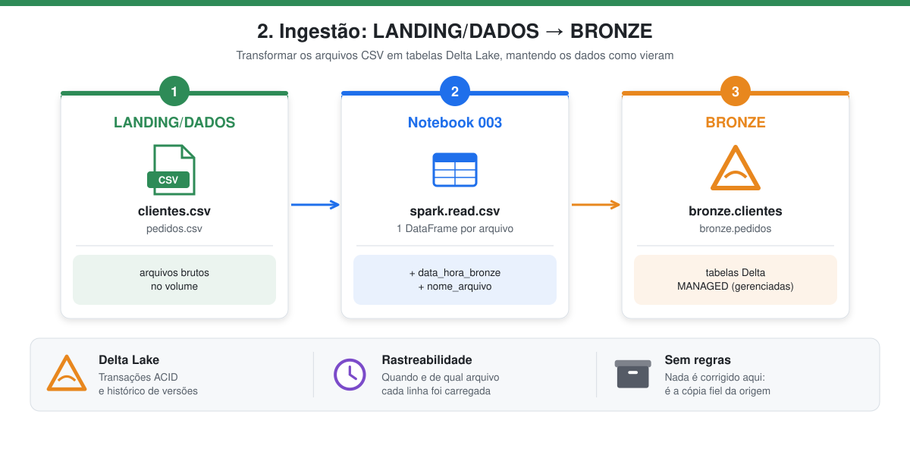
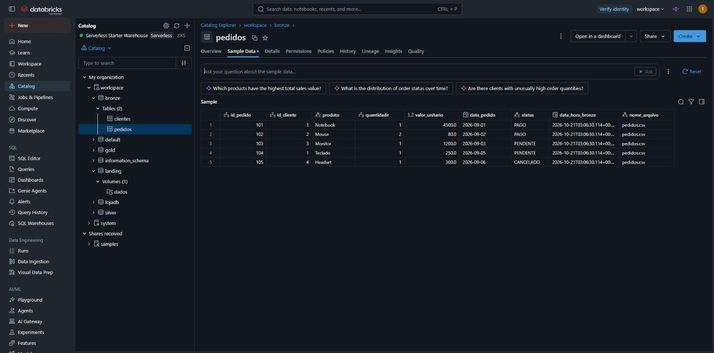

2. Ingestão → BRONZE
Notebook: 003_landing_para_bronze

Em poucas palavras: os arquivos CSV são transformados em tabelas "inteligentes" (Delta Lake), que lembram cada alteração feita e nunca ficam pela metade. Os dados continuam exatamente como vieram; só ganham uma etiqueta dizendo quando e de qual arquivo foram carregados.
| Condição | O que significa |
|---|---|
| Ler os arquivos da LANDING/DADOS | Cada CSV do volume vira uma tabela em memória (DataFrame). |
| Gravar em DELTA LAKE | As tabelas são salvas no formato Delta, com histórico e transações seguras. |
| Schema BRONZE | Todas ficam no schema bronze, como tabelas gerenciadas pelo Databricks. |
O que é a camada bronze
A bronze guarda os dados brutos (raw), sem nenhuma regra de negócio, mas já no formato Delta Lake. Em relação aos CSVs da landing, o Delta acrescenta transações ACID, histórico de versões (time travel) e schema registrado no catálogo, os mesmos recursos estudados nos trabalhos 1 e 2.
Como funciona
display(dbutils.fs.ls(...))mostra os arquivos disponíveis no volume.- Um DataFrame é criado para cada CSV, com
headereinferSchema. - Cada DataFrame recebe duas colunas de metadado para rastreabilidade:
data_hora_bronze: data e hora do processamento;nome_arquivo: arquivo de origem na landing.
- Os DataFrames são gravados com
saveAsTable, gerando tabelas MANAGED no schemabronze.
df_clientes = spark.read.option("inferSchema", "true").option("header", "true").csv(f"{caminho_landing}/clientes.csv")
df_pedidos = spark.read.option("inferSchema", "true").option("header", "true").csv(f"{caminho_landing}/pedidos.csv")
df_clientes = df_clientes.withColumn("data_hora_bronze", current_timestamp()).withColumn("nome_arquivo", lit("clientes.csv"))
df_pedidos = df_pedidos.withColumn("data_hora_bronze", current_timestamp()).withColumn("nome_arquivo", lit("pedidos.csv"))
df_clientes.write.format('delta').mode("overwrite").saveAsTable("bronze.clientes")
df_pedidos.write.format('delta').mode("overwrite").saveAsTable("bronze.pedidos")
No fim, SHOW TABLES, DESCRIBE DETAIL e DESCRIBE EXTENDED confirmam que as tabelas são Delta e do tipo MANAGED.
Resultado – bronze.pedidos
| id_pedido | id_cliente | produto | quantidade | valor_unitario | data_pedido | status | nome_arquivo |
|---|---|---|---|---|---|---|---|
| 101 | 1 | Notebook | 1 | 4500.0 | 2026-09-01 | PAGO | pedidos.csv |
| 102 | 2 | Mouse | 2 | 80.0 | 2026-09-02 | PAGO | pedidos.csv |
| 103 | 3 | Monitor | 1 | 1200.0 | 2026-09-03 | PENDENTE | pedidos.csv |
| 104 | 1 | Teclado | 1 | 250.0 | 2026-09-05 | PENDENTE | pedidos.csv |
| 105 | 4 | Headset | 1 | 300.0 | 2026-09-06 | CANCELADO | pedidos.csv |
Note que valor_unitario chega como número decimal comum (double), pois o CSV não carrega o tipo original DECIMAL(10,2). A correção do tipo é feita na silver.
